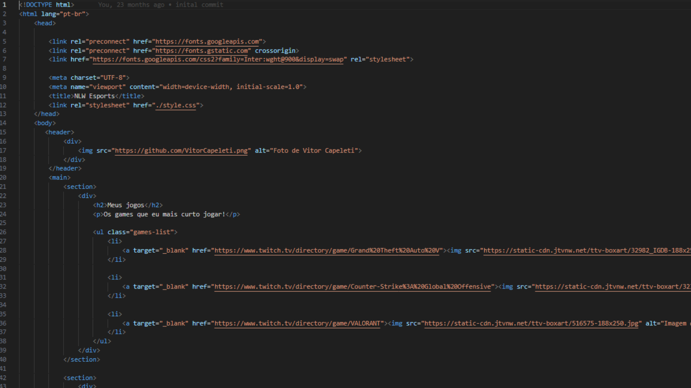
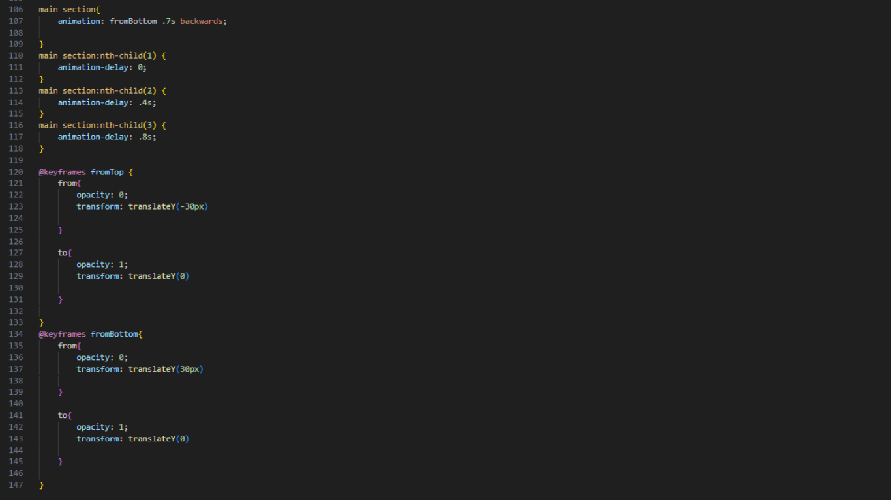

Finalidade do Projeto

A Nlw, foi um projeto desenvolvido durante um evento de programação, esse site funciona como uma lista pessoal, possibilitando o usuário que densenvolveu o site, crie tópicos de jogos, estreamers, entre outros. Esse site tem a funcionalidade de expor seus hobbies favoritos, principalmente os realizados dentro da internet, como seus jogos favoritos, por exemplo.
Tecnologias Utilizadas
O projeto da Nlw, foi desenvolvido apenas com design. Para o design dos componentes e como seriam colocados dentro do site, foi utilizado o Figma, já o design Web foi desenvolvido com HTML e CSS, utilizando diversos elementos de estilização e animação dentro do próprio CSS.
Considerações Finais
Com o resultado final, consegui desenvolver mais minhas habilidades de Desenvolvedor Web e aprimorar meu conhecimento sobre algumas técnicas. O projeto, também serviu como ideia de design para novos projetos posteriores.